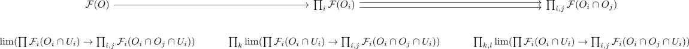

glueing of sheaves
Definition / Proposition
Let $\mathcal{C}$ be a (sufficently) complete category, $(X, \mathcal{T})$ be a topological space, $U_i \subseteq X$ be an open cover and $\mathcal{F}_i: \mathrm{Op}(U_i)^{\mathrm{op}} \rightarrow \mathcal{C}$ a family of sheaves Then there exists a sheaf
\begin{align*}
\mathcal{F}: \mathrm{Op}(X)^{\mathrm{op}} \rightarrow \mathcal{C}
\end{align*}
with
\begin{align*}
\mathcal{F}(U_i) \cong \mathcal{F}_i(U_i)
\end{align*}
given by
\begin{align*}
\mathcal{F}(O) \coloneqq \mathrm{lim}(\prod_{i} \mathcal{F}_i(U_i \cap O) \rightarrow \prod_{i,j} \mathcal{F}_i(U_i \cap U_j \cap X))
\end{align*}
and morphism induced by lim functor
\begin{align*}
\mathcal{F}(U_i \cap O) \rightarrow \mathcal{F}(U_i \cap O')
\end{align*}
for $O' \subseteq O$
Proof
equalizer condition
follows mostly from limits commute with limits, as for another open cover $O_i$

TODO